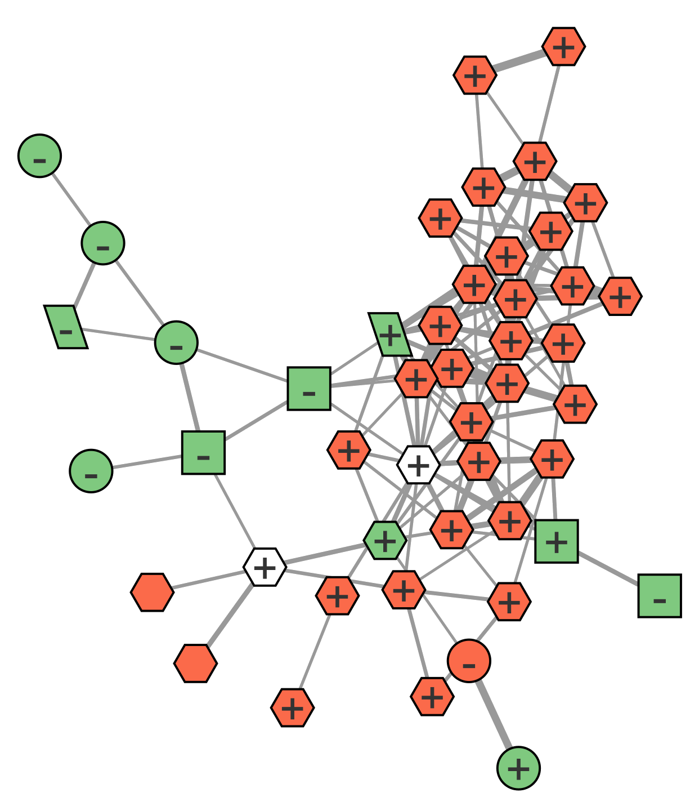
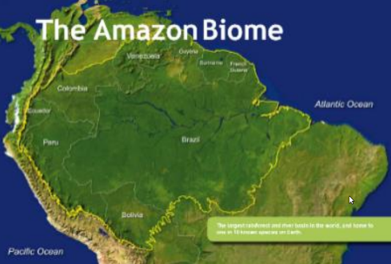
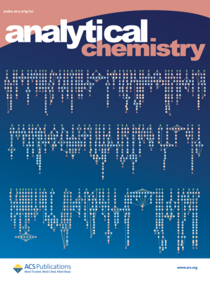
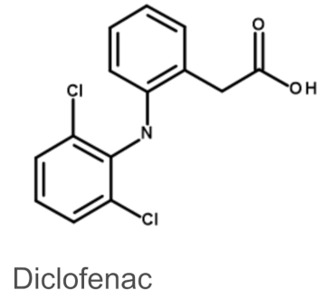
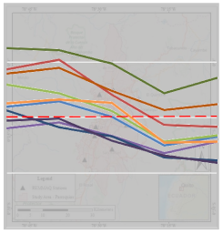
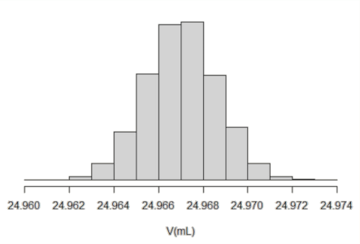
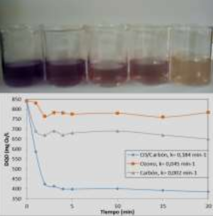

Welcome to my personal website! 👨🔬
I hope you find something of interest here. If you’d like to learn more about the content of this site or about me, please feel free to reach out.
This page serves as collection of my academic information, including my CV, a repository of reports and publications, programming tools, and training course certificates.
I am currently seeking research opportunities in mass spectrometry and natural products chemistry, and I’m open to any inquiries or collaboration opportunities in these areas.
CVRepository
|  |
Automated Prediction of the Endocrine Disruptive Potency of Chemicals detected with LC/ESI/HRMS based on Mass Spectral Networks Master thesis project, 2023 Project page PDF Code DiVA record |
|  |
Mass Spectrometry in Bioprospecting of Plant Natural Products in the Amazon Rainforest Coursework, short review manuscript, 2023 |
|  |
Semantic Annotation of Experimental Methods in Analytical Chemistry M. Palmblad, et al. Analytical Chemistry, 2022 DOI |
|  |
Preconcentration Strategy for Pharmaceuticals in Wastewater with Liquid Chromatography UV V. Eriksson, L. Soto, T. Wiegel Coursework, 2022 PDF slides poster |
|  |
Poster: Fine Particulate Matter (PM2.5) in Air Coursework, 2022 |
|  |
Selecting Instruments and Determining the Number of Repetitions to Achieve a Given Measurement Uncertainty R. Salazar, L. Soto Coursework, 2021 PDF slides |
|  |
Study of Combination of Ozone with Hydrogen Peroxide and Activated Carbon in the Treatment of Blue BRL Dye and Textile Effluent F. Muñoz, V. Maldonado, M. Barba, L. Soto, O. Balladares Conference, 2015 |
Tools
Continuing education
Selected courses with their websites and certificates :
View a list of all courses here.